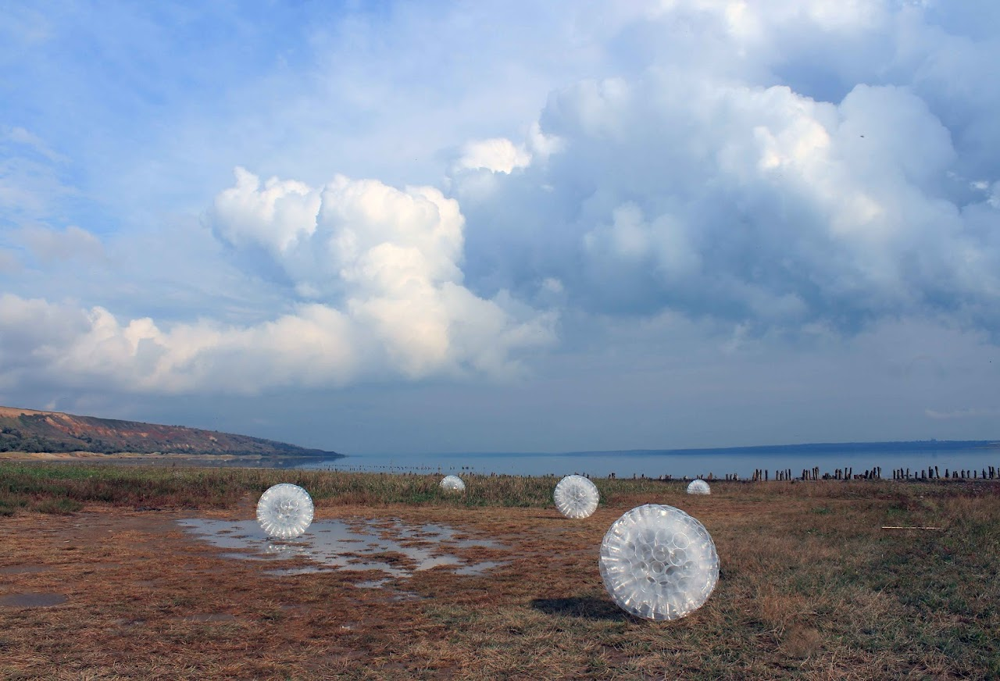

TUMBLEWEEDS OF THE 21ST CENTURY
2017 · Land art festival 'web' · Odessa
Concept
This work is not about pollution as a separate phenomenon or a visible disaster. It addresses a condition in which synthetic materials circulate alongside natural processes and are no longer perceived as anomalies. In the context of the Anthropocene, plastic does not simply accumulate somewhere “else”; it moves, breaks down, reappears, and gradually becomes part of how landscapes function and are read.
The spherical forms assembled from plastic cups behave like tumbleweeds. They roll, gather temporarily, and disperse again, following wind, water, and terrain. Their presence does not interrupt the landscape in a dramatic way. Instead, it blends into it, raising the uneasy question of when an artificial object begins to feel expected, even normal.
The work points to a shift in perception characteristic of the Anthropocene. Nature is no longer a separate, untouched domain, and waste is no longer external to it. What emerges is a hybrid environment, shaped by circulation rather than accumulation, where human-made materials adopt the logic of natural movement.